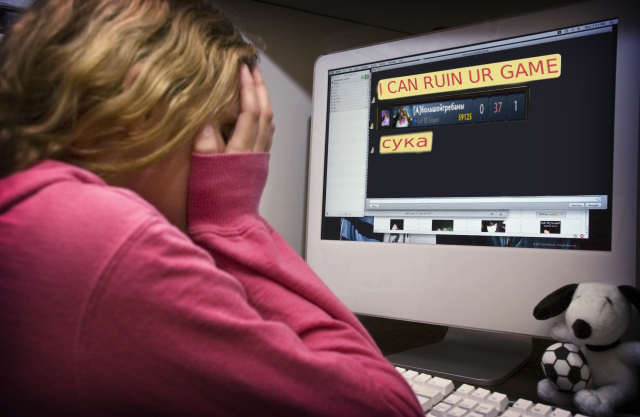

What is Feeding in DOTA2?
You may ask yourself what feeding in DOTA2 includes.
This is why we have summarized a list for you:
- going mid as Drow Ranger
- picking Sniper
- jungling with Wraith King
- buying a Dagon
- dying after not buying dust against Riki
- walking into Mirana's arrow
- giving up first blood
- walking across the river by yourself when all 5 are missing
- not buying wards
Any of the above (and probably more techniques) are considered feeding.
Feeding in DOTA2 is a very serious problem and can not only depress people but even drive them into suicide! This is why it is important for you to take action against any feeding in DOTA2!
